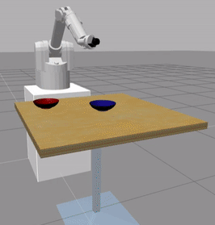
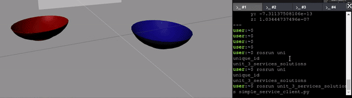

<img src="img/iri_wam.jpg" width="500" />
<!-- <img src="img/rosject.png" width="250" style="float:left;" /> --><!-- * ROSject Link: http://bit.ly/2LMWiKN* Package Name: **iri_wam_gazebo*** Launch File: **main.launch**--><b>Estimated time to completion:</b> 2.5 hours<br><br><b>What will you learn with this unit?</b>* What a service is* How to manage services of a robot* How to call a serviceEstimated time to completion: 2.5 hours
What will you learn with this unit?
Congratulations! You now know **75%** of ROS-basics!The reason is that, with topics, you can do more or less whatever you want and need for your astromech droid. Many ROS packages only use topics and have the work perfectly done.Then why do you need to learn about **services**?Well, that's because for some cases, topics are insufficient or just too cumbersome to use. Of course, you can destroy the <i>Death Star</i> with a stick, but you will just spend ages doing it. Better tell Luke SkyWalker to do it for you, right? Well, it's the same with services. They just make life easier. Congratulations! You now know 75% of ROS-basics!
The reason is that, with topics, you can do more or less whatever you want and need for your astromech droid. Many ROS packages only use topics and have the work perfectly done.
Then why do you need to learn about services?
Well, that's because for some cases, topics are insufficient or just too cumbersome to use. Of course, you can destroy the Death Star with a stick, but you will just spend ages doing it. Better tell Luke SkyWalker to do it for you, right? Well, it's the same with services. They just make life easier.
To understand what services are and when to use them, you have to compare them with topics and actions.Imagine you have your own personal BB-8 robot. It has a laser sensor, a face-recognition system, and a navigation system. The laser will use a **Topic** to publish all of the laser readings at 20hz. We use a topic because we need to have that information available all the time for other ROS systems, such as the navigation system.The Face-recognition system will provide a **Service**. Your ROS program will call that service and **WAIT** until it gives you the name of the person BB-8 has in front of it.The navigation system will provide an **Action**. Your ROS program will call the action to move the robot somewhere, and **WHILE** it's performing that task, your program will perform other tasks, such as complain about how tiring C-3PO is. And that action will give you **Feedback** (for example: distance left to the desired coordinates) along the process of moving to the coordinates.To understand what services are and when to use them, you have to compare them with topics and actions.
Imagine you have your own personal BB-8 robot. It has a laser sensor, a face-recognition system, and a navigation system. The laser will use a Topic to publish all of the laser readings at 20hz. We use a topic because we need to have that information available all the time for other ROS systems, such as the navigation system.
The Face-recognition system will provide a Service. Your ROS program will call that service and WAIT until it gives you the name of the person BB-8 has in front of it.
The navigation system will provide an Action. Your ROS program will call the action to move the robot somewhere, and WHILE it's performing that task, your program will perform other tasks, such as complain about how tiring C-3PO is. And that action will give you Feedback (for example: distance left to the desired coordinates) along the process of moving to the coordinates.
So... What's the difference between a **Service** and an **Action**?Services are <b>Synchronous</b>. When your ROS program calls a service, your program can't continue until it receives a result from the service.<br>Actions are <b>Asynchronous</b>. It's like launching a new thread. When your ROS program calls an action, your program can perform other tasks while the action is being performed in another thread.So... What's the difference between a Service and an Action?
Services are Synchronous. When your ROS program calls a service, your program can't continue until it receives a result from the service.
Actions are Asynchronous. It's like launching a new thread. When your ROS program calls an action, your program can perform other tasks while the action is being performed in another thread.
**Conclusion: Use services when your program can't continue until it receives the result from the service.**Conclusion: Use services when your program can't continue until it receives the result from the service.
Enough talk for now, let's go play with a robot and launch a prepared demo!Enough talk for now, let's go play with a robot and launch a prepared demo!
<p style="background:#407EAF;color:white;">**Example 3.1**</p>Example 3.1
Go to the WebShell and do the following:Go to the WebShell and do the following:
<table style="float:left;background: #407EAF"><tr><th><p class="transparent">Execute in WebShell #1</p></th></tr></table><br>|
Execute in WebShell #1 |
|---|
roslaunch iri_wam_aff_demo start_demo.launchThis will make the Wam robot-arm of the simulation move. You should get something similar to this:This will make the Wam robot-arm of the simulation move. You should get something similar to this:
<img src="img/basic_unit3_example1-1.gif"/>
<p style="background:#407EAF;color:white;">END **Example 3.1**</p>END Example 3.1
The launch file has launched two nodes (Yes! You can launch more than one node with a single launch file):* /iri_wam_reproduce_trajectory* /iri_wam_aff_demoThe first node provides the **<i>/execute_trajectory</i>** service. This is the node that contains the **service**.The second node, performs calls to that service. When the service is called, the robot will execute a given trajectory.The launch file has launched two nodes (Yes! You can launch more than one node with a single launch file):
The first node provides the /execute_trajectory service. This is the node that contains the service. The second node, performs calls to that service. When the service is called, the robot will execute a given trajectory.
<p style="background:#407EAF;color:white;">**Example 3.2**</p>Example 3.2
Let's see a list of the available services in the Wam robot. For that, open another shell.<br>**You have to leave the <i>start_demo.launch</i> running, otherwise the services won't be there to see them.<br>**Let's see a list of the available services in the Wam robot. For that, open another shell.
You have to leave the start_demo.launch running, otherwise the services won't be there to see them.
Execute the following command in a different shell from the one that has the roslaunch **start_demo.launch** running:Execute the following command in a different shell from the one that has the roslaunch start_demo.launch running:
<table style="float:left;background: #407EAF"><tr><th><p class="transparent">Execute in WebShell #2</p></th></tr></table><br>|
Execute in WebShell #2 |
|---|
rosservice listYou should see something like the following image, listing all the services available:You should see something like the following image, listing all the services available:
<p style="background: #407EAF">WebShell #2 Output</p>WebShell #2 Output
user ~ $ rosservice list/camera/rgb/image_raw/compressed/set_parameters/camera/rgb/image_raw/compressedDepth/set_parameters/camera/rgb/image_raw/theora/set_parameters/camera/set_camera_info/camera/set_parameters/execute_trajectory/gazebo/apply_body_wrench...<font style="color:red;"><b>WARNING: If the <i>/execute_trajectory</i> server is not listed, maybe that's because you stopped the <i>start_demo.launch</i>. If that is the case, launch it again and check for the service.</b></font>There are a few services, aren't there? Some refer to the simulator system (<i>/gazebo/...</i>), and others refer to the Kinect Camera (<i>/camera/...</i>) or are given by the robot himself (<i>/iri_wam/...</i>).You can see how the service <i>/execute_trajectory</i> is listed there.<br>You can get more information about any service by issuing the following command:There are a few services, aren't there? Some refer to the simulator system (/gazebo/...), and others refer to the Kinect Camera (/camera/...) or are given by the robot himself (/iri_wam/...).
You can see how the service /execute_trajectory is listed there.
You can get more information about any service by issuing the following command:
rosservice info /name_of_your_serviceExecute the following command to know more about the service **<i>/execute_trajectory</i>**.Execute the following command to know more about the service /execute_trajectory.
<table style="float:left;background: #407EAF"><tr><th><p class="transparent">Execute in WebShell #2</p></th></tr></table><br>|
Execute in WebShell #2 |
|---|
rosservice info /execute_trajectory<p style="background: #407EAF">WebShell #2 Output</p>WebShell #2 Output
user ~ $ rosservice info /execute_trajectoryNode: /iri_wam_reproduce_trajectoryURI: rosrpc://ip-172-31-17-169:35175Type: iri_wam_reproduce_trajectory/ExecTrajArgs: fileHere you have two relevant parts of data.* **Node**: It states the node that provides (has created) that service.* **Type**: It refers to the kind of message used by this service. It has the same structure as topics do. It's always made of **<i>package_where_the_service_message_is_defined</i> / <i>Name_of_the_File_where_Service_message_is_defined</i>**. In this case, the package is **<i>iri_wam_reproduce_trajectory</i>**, and the file where the Service Message is defined is called **<i>ExecTraj</i>**.* **Args**: Here you can find the arguments that this service takes when called. In this case, it only takes a **<i>trajectory file path</i>** stored in the variable called **<i>file</i>**.Here you have two relevant parts of data.
<p style="background:#407EAF;color:white;">END **Example 3.2**</p>END Example 3.2
### Want to know how this <i>/execute_trajectory</i> service is started?Here you have an example on how to check the **start_demo.launch** file through WebShell.Here you have an example on how to check the start_demo.launch file through WebShell.
<p style="background:#407EAF;color:white;" id="example3.3">**Example 3.3**</p>Example 3.3
Do you remember how to go directly to a package and where to find the launch files?<br>Do you remember how to go directly to a package and where to find the launch files?
<table style="float:left;background: #407EAF"><tr><th><p class="transparent">Execute in WebShell #2</p></th></tr></table>|
Execute in WebShell #2 |
|---|
roscd iri_wam_aff_democd launch/cat start_demo.launchYou should get something like this:You should get something like this:
<launch> <include file="$(find iri_wam_reproduce_trajectory)/launch/start_service.launch"/> <node pkg ="iri_wam_aff_demo" type="iri_wam_aff_demo_node" name="iri_wam_aff_demo" output="screen"> </node></launch><b>Some interesting things here</b>:<br><br>1) The first part of the launch file calls another launch file called **<i>start_service.launch</i>**.<br><br>That launch file starts the node that provides the <i>/execute_trajectory</i> service. Note that it's using a special ROS launch file function to find the path of the package given.<br>Some interesting things here:
1) The first part of the launch file calls another launch file called start_service.launch.
That launch file starts the node that provides the /execute_trajectory service. Note that it's using a special ROS launch file function to find the path of the package given.
<include file="$(find package_where_launch_is)/launch/my_launch_file.launch"/>2) The second part launches a node just as you learned in the <b>ROS Basics Unit</b>. That node is the one that will call the <i>/execute_trajectory</i> service in order to make the robot move.2) The second part launches a node just as you learned in the ROS Basics Unit. That node is the one that will call the /execute_trajectory service in order to make the robot move.
3) The second node is not a Python node, but a cpp compiled (binary) one. You can build ROS programs either in Cpp or Python. This course focuses on Python.3) The second node is not a Python node, but a cpp compiled (binary) one. You can build ROS programs either in Cpp or Python. This course focuses on Python.
<node pkg ="package_where_cpp_is" type="name_of_binary_after_compiling_cpp" name="name_of_the_node_initialised_in_cpp" output="screen"></node><p style="background:#407EAF;color:white;">END **Example 3.3**</p>END Example 3.3
You can call a service manually from the console. This is very useful for testing and having a basic idea of how the service works.You can call a service manually from the console. This is very useful for testing and having a basic idea of how the service works.
rosservice call /the_service_name TAB-TAB<font class="ign_green"><b>Info: <i>TAB-TAB</i> means that you have to quickly press the <i>TAB</i> key twice. This will autocomplete the structure of the Service message to be sent for you. Then, you only have to fill in the values.</b></font><br>Info: TAB-TAB means that you have to quickly press the TAB key twice. This will autocomplete the structure of the Service message to be sent for you. Then, you only have to fill in the values.
<p style="background:#407EAF;color:white;">**Example 3.4**</p>Example 3.4
Let's call the service with the name **/gazebo/delete_model** by issuing the following command.Let's call the service with the name /gazebo/delete_model by issuing the following command.
<table style="float:left;background: #407EAF"><tr><th><p class="transparent">Execute in WebShell #2</p></th></tr></table><br>|
Execute in WebShell #2 |
|---|
rosservice call /gazebo/delete_model [TAB]+[TAB]When you [TAB]+[TAB], an extra element appears. ROS autocompletes with the structure needed to input/request the service.<br>In this case, it gives the following structure:<br><br><b>"model_name: '<span class="ign_blue">the_name_of_the_object_you_want_to_delete</span>'"</b>When you [TAB]+[TAB], an extra element appears. ROS autocompletes with the structure needed to input/request the service.
In this case, it gives the following structure:
"model_name: 'the_name_of_the_object_you_want_to_delete'"
The **/gazebo/delete_model** Service is a service provided by the simulator that allows you **to delete any object in the scene**.The /gazebo/delete_model Service is a service provided by the simulator that allows you to delete any object in the scene.
Use that service to remove the table. The model_name of the table in the simulation is **cafe_table**.Use that service to remove the table. The model_name of the table in the simulation is cafe_table.
<table style="float:left;background: #407EAF"><tr><th><p class="transparent">Execute in WebShell #2</p></th></tr></table><br>|
Execute in WebShell #2 |
|---|
rosservice call /gazebo/delete_model "model_name: 'cafe_table'"Did it dissappear? You should have seen something similar to this:Did it dissappear? You should have seen something similar to this:
<img src="img/basic_unit3_example3-4.gif"/>
Now, if you want to do this with any object of the simulation, you will have to learn how to get the list of objects in the scene.<br>Do the following:Now, if you want to do this with any object of the simulation, you will have to learn how to get the list of objects in the scene.
Do the following:
<table style="float:left;background: #407EAF"><tr><th><p class="transparent">Execute in WebShell #2</p></th></tr></table><br>|
Execute in WebShell #2 |
|---|
rostopic echo /gazebo/model_states -n1You should get a list similar to this one:You should get a list similar to this one:
user:~$ rostopic echo /gazebo/model_states -n1name: ['ground_plane', 'kinect', 'bowl_2', 'bowl_1', 'unit_box_1', 'iri_wam']pose: ...(the poses of each one of the models in the list in order)<font class="ign_red"><b>But don't get too excited deleting objects or you'll end up without a robot.</b></font><p style="background:#407EAF;color:white;">END **Example 3.4**</p>END Example 3.4
### But how do you interact with a service programatically?<p style="background:#407EAF;color:white;" id="example3.5">**Example 3.5**</p>Example 3.5
Execute the following Python code <a href="#prg-3-1">simple_service_client.py</a> by clicking on it and then clicking on the play button on the top right-hand corner of the IPython notebook.<br> Execute the following Python code simple_service_client.py by clicking on it and then clicking on the play button on the top right-hand corner of the IPython notebook.
<div class='white_bg'><img src="img/font-awesome_step-forward.png" style="float:left"/><br><br></div>
You can also press **[CTRL]+[Enter]** to execute it.You can also press [CTRL]+[Enter] to execute it.
What do you think it will do?<br>What do you think it will do?
<p style="background:#3B8F10;color:white;" id="prg-3-5">**Python Program {3.5}: simple_service_client.py** </p><br>Python Program {3.5}: simple_service_client.py
#! /usr/bin/env pythonimport rospyfrom gazebo_msgs.srv import DeleteModel, DeleteModelRequest # Import the service message used by the service /gazebo/delete_modelimport sys rospy.init_node('service_client') # Initialise a ROS node with the name service_clientrospy.wait_for_service('/gazebo/delete_model') # Wait for the service client /gazebo/delete_model to be runningdelete_model_service = rospy.ServiceProxy('/gazebo/delete_model', DeleteModel) # Create the connection to the servicekk = DeleteModelRequest() # Create an object of type DeleteModelRequestkk.model_name = "bowl_1" # Fill the variable model_name of this object with the desired valueresult = delete_model_service(kk) # Send through the connection the name of the object to be deleted by the serviceprint result # Print the result given by the service called<p style="background:#3B8F10;color:white;">**END Python Program {3.5}: simple_service_client.py** </p>END Python Program {3.5}: simple_service_client.py
You should have seen the bowl_1 disappear after executing this snippet of code.<br>You should have seen the bowl_1 disappear after executing this snippet of code.
<img src="img/basic_unit3_example3-5.gif"/>
<p style="background:#407EAF;color:white;">END **Example 3.5**</p>END Example 3.5
### How to know the structure of the service message used by the service?<p style="background:#407EAF;color:white;" id="example3.6">**Example 3.6**</p>Example 3.6
You can do a **rosservice info ** to know the type of service message that it uses.You can do a rosservice info to know the type of service message that it uses.
rosservice info /name_of_the_serviceThis will return you the **name_of_the_package/Name_of_Service_message**This will return you the name_of_the_package/Name_of_Service_message
Then, you can explore the structure of that service message with the following command:Then, you can explore the structure of that service message with the following command:
rossrv show name_of_the_package/Name_of_Service_messageExecute the following command to see what is the service message used by the **/gazebo/delete_model** service:Execute the following command to see what is the service message used by the /gazebo/delete_model service:
<table style="float:left;background: #407EAF"><tr><th><p class="transparent">Execute in WebShell #2</p></th></tr></table><br>|
Execute in WebShell #2 |
|---|
rosservice info /gazebo/delete_modelYou should see something like this:You should see something like this:
<p style="background: #407EAF">WebShell #2 Output</p>WebShell #2 Output
Node: /gazeboURI: rosrpc://ip-172-31-35-239:50272Type: gazebo_msgs/DeleteModelArgs: model_nameNow, execute the following command to see the structure of the message **DeleteModel**:Now, execute the following command to see the structure of the message DeleteModel:
<table style="float:left;background: #407EAF"><tr><th><p class="transparent">Execute in WebShell #2</p></th></tr></table><br>|
Execute in WebShell #2 |
|---|
rossrv show gazebo_msgs/DeleteModelYou should see something like this:You should see something like this:
<p style="background: #407EAF">WebShell #2 Output</p>WebShell #2 Output
user catkin_ws $ rossrv show gazebo_msgs/DeleteModelstring model_name---bool successstring status_messageDoes it seem familiar? It should, because it's the same structure as the Topics messages, with some addons.Does it seem familiar? It should, because it's the same structure as the Topics messages, with some addons.
#### 1- Service message files have the extension **<i>.srv</i>**. Remember that Topic message files have the extension **<i>.msg</i>**#### 2- Service message files are defined inside a **<i>srv</i>** directory. Remember that Topic message files are defined inside a **<i>msg</i>** directory.You can type the following command to check it.You can type the following command to check it.
<table style="float:left;background: #407EAF"><tr><th><p class="transparent">Execute in WebShell #2</p></th></tr></table>|
Execute in WebShell #2 |
|---|
roscd gazebo_msgs; ls srv<p style="color: blue;">**REQUEST**</p><br>---<br><p style="color: green;">**RESPONSE**</p>REQUEST
RESPONSE
In the case of the DeleteModel service, <span style="color: blue;">**REQUEST**</span> contains a string called **<i>model_name</i>** and <span style="color: green;">**RESPONSE**</span> is composed of a boolean named **<i>success</i>**, and a string named **<i>status_message</i>**.<br><br>The Number of elements on each part of the service message can vary depending on the service needs. You can even put none if you find that it is irrelevant for your service. The important part of the message is the three dashes <b>---</b>, because they define the file as a Service Message.In the case of the DeleteModel service, REQUEST contains a string called model_name and RESPONSE is composed of a boolean named success, and a string named status_message.
The Number of elements on each part of the service message can vary depending on the service needs. You can even put none if you find that it is irrelevant for your service. The important part of the message is the three dashes ---, because they define the file as a Service Message.
Summarizing:The <span style="color: blue;">**REQUEST**</span> is the part of the service message that defines **HOW you will do a call** to your service. This means, what variables you will have to pass to the Service Server so that it is able to complete its task.The <span style="color: green;">**RESPONSE**</span> is the part of the service message that defines **HOW your service will respond** after completing its functionality. If, for instance, it will return an string with a certaing message saying that everything went well, or if it will return nothing, etc...Summarizing:
The REQUEST is the part of the service message that defines HOW you will do a call to your service. This means, what variables you will have to pass to the Service Server so that it is able to complete its task.
The RESPONSE is the part of the service message that defines HOW your service will respond after completing its functionality. If, for instance, it will return an string with a certaing message saying that everything went well, or if it will return nothing, etc...
<p style="background:#407EAF;color:white;">END **Example 3.6**</p>END Example 3.6
<p id="ex-2.3" style="background:#EE9023;color:white;">**Exercise 3.1**</p>Exercise 3.1
* First of all, create a package to place all the future code. For better future reference, you can call it **unit_3_services**, with dependencies **rospy** and **iri_wam_reproduce_trajectory**.* Create a launch called **my_robot_arm_demo.launch**, that starts the **/execute_trajectory** service. As explained in the <a href="#example3.3">Example 3.3</a>, this service is launched by the launch file **start_service.launch**, which is in the package **iri_wam_reproduce_trajectory**.* Get information of what type of service message does this **/execute_trajectory** service uses, as explained in <a href="#example3.6">Example 3.6</a>.* Make the robotic arm move following a trajectory, which is specified in a file.<br>Modify the previous code of <a href="#example3.5">Example 3.5</a>, which called the **/gazebo/delete_model** service, to call now the **/execute_trajectory** service instead. The new Python file could be called **exercise_3_1.py**, for future reference.* Here you have the code necessary to get the path to the trajectory files based on the package where they are. Here, the trajectory file **get_food.txt** is selected, but you can use any of the available in the **config** folder of the **iri_wam_reproduce_trajectory** package.import rospkgrospack = rospkg.RosPack()# This rospack.get_path() works in the same way as $(find name_of_package) in the launch files.traj = rospack.get_path('iri_wam_reproduce_trajectory') + "/config/get_food.txt"* Modify the main launch file **my_robot_arm_demo.launch**, so that now it also launches the Python code you have just created in **exercise_3_1.py**.* Finally, execute the **my_robot_arm_demo.launch** file and see how the robot performs the trajectory.<p id="ex-2.3" style="background:#EE9023;color:white;">END **Exercise 3.1**</p>END Exercise 3.1
<p style="background:green;color:white;">Solution Exercise 3.1</p>Solution Exercise 3.1
Please Try to do it by yourself unless you get stuck or need some inspiration. You will learn much more if you fight for each exercise.Please Try to do it by yourself unless you get stuck or need some inspiration. You will learn much more if you fight for each exercise.
<img src="img/robotignite_logo_text.png"/>
Follow this link to open the solutions notebook for Unit3 Services Part1:[solutions_unit3_services_part1](extra_files/solutions_unit3_services_part1.ipynb)Follow this link to open the solutions notebook for Unit3 Services Part1:solutions_unit3_services_part1
<p style="background:green;color:white;">END Solution Exercise 3.1</p>END Solution Exercise 3.1
Services provide functionality to other nodes. If a node knows how to delete an object on the simulation, it can provide that functionality to other nodes through a service call, so they can call the service when they need to delete something.<br><br>Services allow the specialization of nodes (each node specializes in one thing).Services provide functionality to other nodes. If a node knows how to delete an object on the simulation, it can provide that functionality to other nodes through a service call, so they can call the service when they need to delete something.
Services allow the specialization of nodes (each node specializes in one thing).